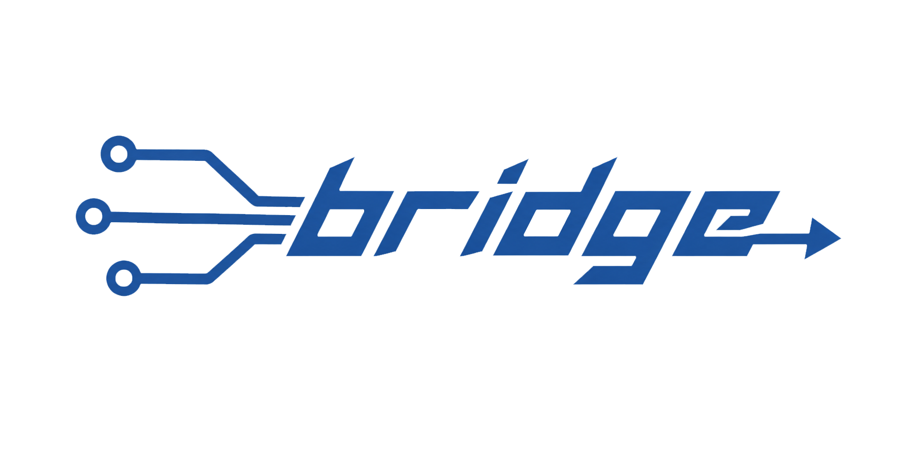

HARDWARE OFFLINE
WS OFFLINE
UE RC
Units
m / cm
ft / in
Script Host
WS Port
UE5 Host
UE5 OSC Port
Base Path
Config
Export
Import
Active camera
— connect to scan —
Rescan
Rexy Wheels — camera head
Absolute
Continuous
Functions
Autolevel Roll
Trigger
Bind
Time (s)
F
Rexy Focus — lens & body
Focus units
m / cm
ft / in
Camera body / filmback
Lens
+ Add custom lens
Focal min
Focal max
f-stop min
f-stop max
Min focus (cm)
Save
Cancel
Zoom
Bind
0.500
Aperture
Bind
0.500
Focus
Bind
0.500
Rexy Grip
Crane
Dolly
Drone
Gamepad Debug
Show
Null Drift (5s)
Clear Cal
Spin a wheel or move a stick — values update live
OSC output
Wheels
Focus
Grip